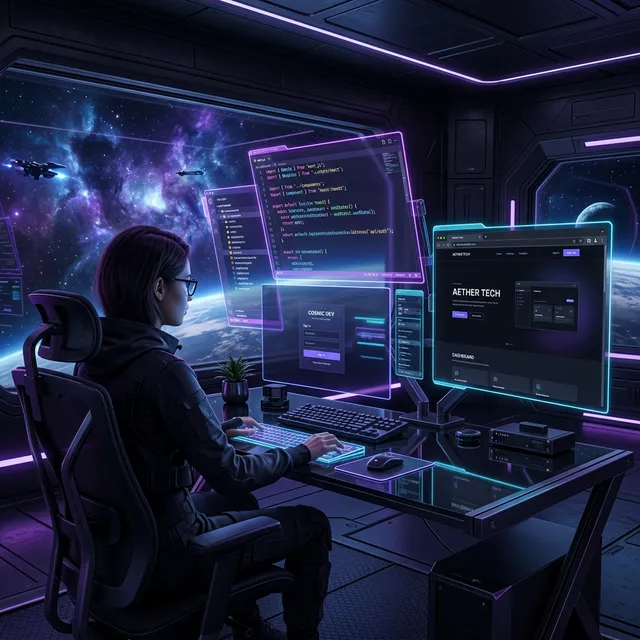

🤖 AIと1週間でWebポータルを作った記録 — Day 1: 構想とNext.jsセットアップ

はじめに — なぜ「ポータルサイト」を作ったのか
2026年2月、38歳の私は雇われ個人事業主から完全独立しました。収入源はUber配達とパチンコ（期待値稼働）の2本柱。
しかし、これらを「ただの日銭稼ぎ」で終わらせたくなかった。配達のデータ分析、パチンコの期待値計算、ブログでの情報発信——すべてを統合する「基地」が欲しかったのです。
そこで、AIコーディングアシスタント「Antigravity」をペアプログラマーとして迎え入れ、Webポータルサイトを構築することにしました。
これはその記録の「Day 1」です。
🎵 バイブコーディング — AIエージェントと「ノリ」で作る新しい開発スタイル
このシリーズで登場する開発手法は、いわゆる「バイブコーディング（Vibe Coding）」と呼ばれるものです。
従来のプログラミングでは、開発者がキーボードに向かい、一行一行コードを書いていました。しかしバイブコーディングでは、AIエージェントに自然言語で「こういうのが欲しい」と伝えるだけで、AIがコードを生成し、ファイルを作成し、ビルドまで自動で行ってくれます。
開発者の役割は「設計者＆レビュアー」に変わります:
- 「こんな機能が欲しい」とAIに伝える
- AIが生成したコードをレビューする
- 動作を確認して、フィードバックを返す
- この繰り返しで、驚くほどのスピードでプロダクトが形になっていく
私の場合、このシリーズを通じて手で書いたコードはほぼ0行です。すべてAntigravityとの対話で生成されました。プログラミングの知識は必要ですが、「書く力」より「伝える力」と「判断する力」が重要な時代になったと実感しています。
🤖 相棒選び — Antigravityとの出会い
最初は無料プランのAIコーディングアシスタントを使い始めました。しかし、開発の設計段階でいきなりトークン上限に到達。やり取りが途切れ途切れになり、コードの文脈を何度も説明し直す羽目に。
「これでは話にならない」と思っていたところ、Antigravity（Proプラン）が今なら¥0で使えることを発見。即座に切り替えました。
Proプランのトークン上限は無料版とは桁違い。長時間の開発セッションでもコンテキストが切れず、まるで横にいるエンジニアと会話しているかのような感覚で開発を進められるようになりました。この差は衝撃的でした。
🎯 Day 1の目標
- 技術スタックの選定
- プロジェクトの初期化
- 認証システムの導入
- 基本レイアウトの構築
- デプロイ先の確保
🛠️ 技術スタック — AIに相談して決めた構成
Antigravityに「個人ポータルサイトを作りたい。要件は：ブログ、有料ツール（パチンコ期待値計算）、決済機能。最適な技術スタックは？」と聞きました。
AIが最初に提案してきたのは、TailwindCSS、Prisma、NextAuth.jsなど「定番」をフルセットにした構成。しかし、本当に必要かどうかを精査し、以下のシンプルな構成に絞りました：
| カテゴリ | AIの提案 | 最終決定 | 理由 |
|---|---|---|---|
| フレームワーク | Next.js | Next.js (App Router) | SSR/SSG対応、SEO最強 |
| 言語 | TypeScript | TypeScript | 型安全、AIとの相性◎ |
| スタイリング | TailwindCSS | Vanilla CSS | 基礎を理解したかった |
| 認証 | NextAuth.js | Clerk | 導入が圧倒的に簡単 |
| ORM | Prisma | なし（Supabase直接） | オーバースペック |
| 決済 | Stripe | Stripe | サブスク対応、日本円OK |
| DB | Supabase | Supabase | 無料枠大、PostgreSQL |
ポイントは「すべて無料枠で始められる」こと。独立直後のキャッシュフローを圧迫しないことが最優先でした。
🚀 プロジェクト初期化 — AIに「作って」と言ってみた
Antigravityに「Next.js + TypeScriptでプロジェクトを初期化して」と指示。数秒でコマンドが生成されました：
npx -y create-next-app@latest ./ --typescript --app --eslint --no-tailwindここで重要なのは--no-tailwind。AIは最初TailwindCSSを提案してきましたが、「CSSの基礎を理解したいから」とVanilla CSSを選択。この判断が後々、カスタムデザインの自由度で大きく活きてくることになります。
🔐 認証導入 — Clerkの衝撃的な簡単さ
Day 1最大の驚きはClerkの導入スピードでした。AIに「Google OAuthで認証を入れたい」と伝えたところ、以下の手順が示されました：
npm install @clerk/nextjs- 環境変数にAPIキーを設定
middleware.tsを1ファイル追加layout.tsxをClerkProviderで囲む
たった4ステップ、所要時間15分で、Googleログイン機能が完成。Antigravityが最初に提案してきたNextAuth.jsだと、OAuth設定やDB連携で数時間はかかっていたはず。ツール選定で「定番」に流されないことの重要性を実感しました。
ただし、後にNext.js 16との互換性問題（auth()がmiddlewareで動かない）に直面することになるのですが、それはまた別の話…。
🎨 基本レイアウト — ダークモードファーストで設計
レイアウトはAntigravityと対話しながら構築しました。最初に伝えたコンセプトは：
「宇宙っぽいダークテーマ。でもごちゃごちゃしない。ミニマルだけど高級感がある感じ」
AIが提案してきたCSSカスタムプロパティのカラーパレット：
:root {
--bg-primary: #0f1017;
--bg-card: #1e2030;
--accent: #7c7ff2;
--text-primary: #f0f0f8;
}この深い紫をアクセントカラーにした「宇宙×テクノロジー」のビジュアルが、Gravity Portalのアイデンティティになりました。
💥 デプロイ戦争 — ホスティング先を4回変えた話
Day 1最大の苦労ポイントがデプロイ先の選定でした。結論から言うと、4回変更しました。
| 試行 | ホスティング | 問題 | 結果 |
|---|---|---|---|
| 1回目 | Cloudflare Pages（無料） | 13MiBのデータがデプロイ上限に引っかかる | ❌ 断念 |
| 2回目 | Netlify（無料） | 動くが、月の転送量制限に1日で到達 | ❌ NG |
| 3回目 | Cloudflare Pages（有料） | ファイルサイズ上限が3〜10MiBで根本解決せず。企業プラン（月75万円〜）は論外 | ❌ 無駄な出費 |
| 4回目 | Vercel（Hobbyプラン） | 無料、Next.jsネイティブ、問題なし | ✅ 採用 |
Cloudflare有料プランの罠
3回目のCloudflare有料プランへの課金は完全な失敗でした。AIに事前に「有料プランでファイルサイズ上限は変わるか？」と聞いておけば、3〜10MiBの制限があること、その上は企業向けプラン（月75万円〜）しかないことが分かったはず。
教訓: AIに調査させてから課金しろ。勢いで有料プランにアップグレードした結果、無駄な時間とお金を失いました。
Vercelへの着地
最終的にVercel Hobbyプラン（無料）にデプロイして一発で成功。Next.jsの開発元が運営しているだけあって、最初からこれを選んでおけば…という後悔が残ります。
なお、Day 3以降で商用利用（Stripe決済）を組み込む段階で、Vercel Proプラン（$20/月）にアップグレードしています。
📊 Day 1のまとめ
| 項目 | 結果 |
|---|---|
| 作業時間 | 約12時間（14:53〜翌03:01） |
| 完成したもの | プロジェクト初期化、Clerk認証、基本レイアウト、テーマ切替、デプロイ |
| コスト | $0（Vercel Hobby無料）+ Cloudflare有料プランの無駄遣い |
| AIツール変更 | 無料AI → Antigravity Pro（¥0キャンペーン） |
| デプロイ先変更 | 4回（Cloudflare無料 → Netlify → Cloudflare有料 → Vercel） |
| 手で書いたコード | ほぼ0行（AIが生成→レビュー→修正の繰り返し） |
💡 Day 1の学び
1. AIツールへの投資が最も効率的
無料AIで始めてトークン上限に苦しんだ経験から、開発ツールへのケチりは最大のコスト増だと実感しました。Antigravity Proに切り替えてからの生産性は体感5倍以上。¥0で使えるなら迷う理由がありません。
2. AIの提案に「No」と言える力が重要
AIはTailwindCSS、Prisma、NextAuth.jsなど、「定番」を次々と提案してきます。でも、自分のプロジェクトに本当に必要かどうかは自分で判断しなければなりません。Day 1でTailwindを断り、NextAuth.jsの代わりにClerkを選んだ判断は、結果的に正解でした。
3. 課金する前にAIに聞け
Cloudflare有料プランの教訓です。「有料にすれば解決するだろう」という思い込みで課金した結果、根本的な仕様制限のため意味がありませんでした。AIに5分で調べさせるだけで防げた出費です。
4. デプロイ先は「走りながら決める」
4回もホスティングを変えましたが、それでも12時間で動くものができた。最初から完璧な選択をしようとするより、「まず動かして、ダメなら変える」の精神が個人開発では最速です。
📌 シリーズ予定
このシリーズでは、AIと一緒にWebポータルを構築した1週間を Day ごとに振り返ります。
- Day 1: 構想とNext.jsセットアップ ← 今ここ
- Day 2: パチンコ期待値計算ツールの実装
- Day 3: ブログ機能と収益化（Stripe + 広告）
- Day 4: AIの記憶の限界 — コンテキストウィンドウとの戦い
- Day 5: AIが暴走した日 — ルール違反と信頼の再構築
次回 Day 2 では、このポータルの核となるパチンコ期待値計算ツールの実装に取り掛かります。1000機種以上のスペックデータをどう扱うか、AIとの共同作業で解決していく過程をお届けします。お楽しみに！